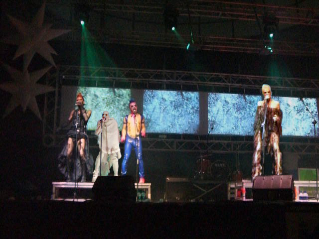
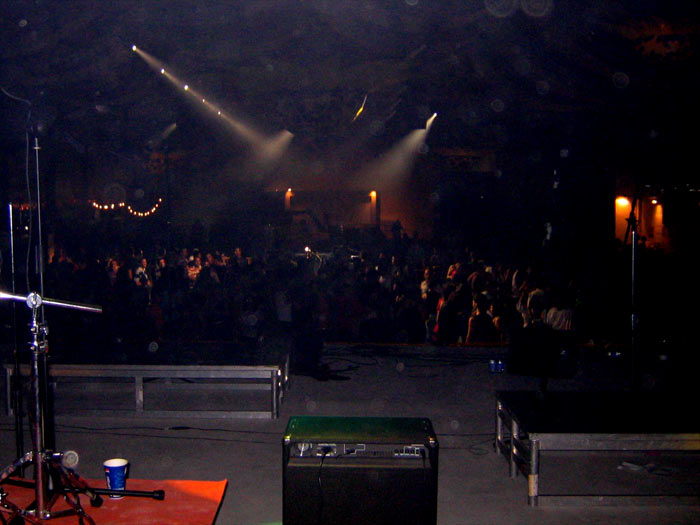
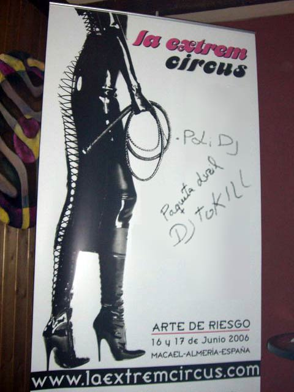

Dennis Agerblad at the La Extrem Circus, Almeria, Spain. |



Backing: Hairwerk, Miss Fish, The Thom. Lead: Dennis Agerblad.



2000 guests.

Dennis Agerblad at the La Extrem Circus, Almeria, Spain. |


